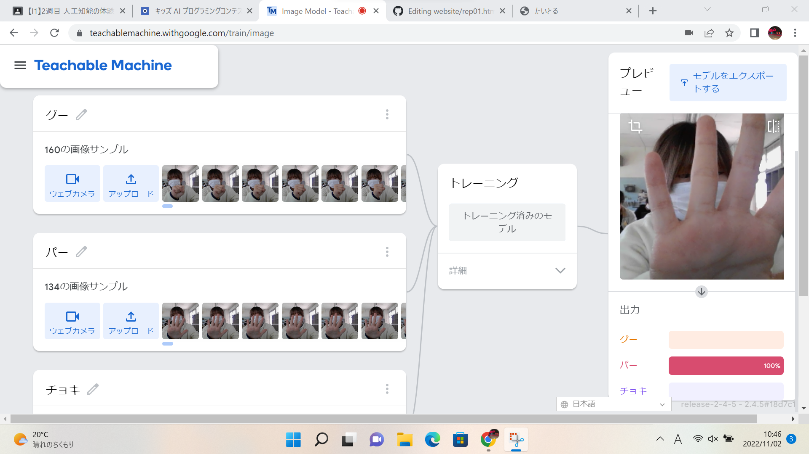

第2週目
2-1 １週目のレポートをHTMLで作る
１週目のレポート
1.内容
一週目で行ったことの内容や感想をまとめたレポートをインターネット上のホームページで作成した。
2.感想
WordやExcelなどを使用してレポート作成を行うことはこれまでにも何度かありましたが、今回のようにホームページ上でレポートを作成するというのは初めてのことで難しく感じる点もかなり多かったです。
2-2 機械学習体験

1.内容
グー・チョキ・パーをそれぞれAIで学習し、カメラに映ったときにグー・チョキ・パーを認識することができるプログラムを作成した。
2.感想
学習させるための写真を多くするほどのグー・チョキ・パーそれぞれの認識が正しく判断されやすくなりましたが、形の似ているグーとチョキを別で認識させることが難しかったです。
2-3 VR（バーチャルリアリティー：Virtual Reality）の体験
1.内容
VRゴーグルを着用し会議室でほかのゴーグルを着用している人と交流ができる体験を行った。
2.感想
重量があるのと私は酔いやすく少ししんどかったですが絵を描けたり話せたり、実際には小さなスペースであっても景色を見に行ったりした気持ちになれてすごいなと思いました。